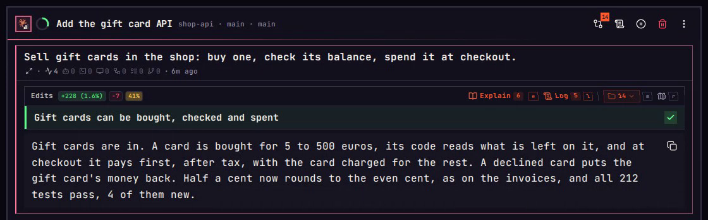
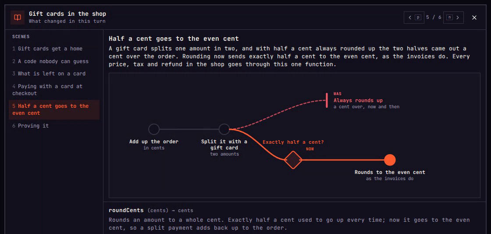

Edits
Understand what a turn changed without reading its files.
A coding agent can change fourteen files in one turn and say it went well. Reading every diff takes longer than the turn did, and a skim lets the one line that matters slip by. The Edits box under a turn answers the same questions another way: its goal, three figures, a map and the agent's own explanation, with every file left closed.
On a phone, each key on this page is a tap.
01Goal
The trap
“Fourteen files changed. It got a lot done.”
Effort heuristic. How much was done stands in for whether it worked.
The goal comes first.
Under the Edits line stands the turn's goal in one sentence, with a tick when the agent says it got there and a cross when it says it did not, and under it the agent's reply. That says whether the turn worked before a line of it is read. The folders and files stay put away behind the 14. A phone always starts that way, and a laptop does with Settings › Spawns › Edits folders set to Closed.

03Weight
The trap
“The biggest edit is the risky one.”
Anchoring. The first number you read, the size of an edit, becomes the measure of its risk.
Weight is what stands on it.
r, or the map mark on a phone, opens the turn on a map of the whole codebase, each folder sized by the code it holds. Green is what the turn changed, shaded by how much. Amber is code that uses the change, and a tie runs into it from the change. src/money changed five lines, and every amber folder says how many of its files use money: those files hold the 41%. src/giftcards took 149 new lines, the thin green strip beside src/money, and nothing ties into it.
r The map
04Reach
The trap
“Only these files can break.”
What you see is all there is. The files on screen feel like the whole story, and the code that calls them is out of sight.
The map shows who calls it.
On the map, a folder's number, or a tap on its tile, opens it. src/money opens on its one changed file, round.ts, at the left, and the 21 files that call what changed at the right, each tied to it. Above them stand its figures: 2.8% of the codebase, 1.2% of it changed, and the 21. q, or the back arrow, goes back to the map.
1–9 Openq Back
05Why
The trap
“I can see why it changed.”
Illusion of explanatory depth. Reading what changed feels like knowing why, until you have to say it.
The why, step by step.
e, or Explain's Open on a phone, opens the turn's explanation: six steps the agent wrote, each with what changed and a drawing of it. n, or the arrow, goes to the next. Step 5 says why half a cent now goes to the even cent, and that every price in the shop goes through it. On a laptop the six are listed at the left, and 5 jumps there.
e Explainn Nextq Close

06Log
The trap
“I remember what came before.”
Recency bias. The last turn fills your head, and the turn that asked for it is forgotten.
The Log keeps every turn.
l, or the Log mark, opens the spawn as chapters: Checkout with two turns, then Gift cards with three. 4, or a tap on Settled the rounding, opens the turn before this one. There you asked to keep amounts in cents and send half a cent to the even cent, which is why round.ts changed.
l Log1–9 Open
07Files
The trap
“I have to read every file to be sure.”
Zero-risk bias. Taking the last doubt down to nothing feels worth any cost, so every file gets read.
One file, for the question left.
When a question is still open, m, or a tap on the 14, brings the folders and their files back, each file with its lines. 2, or a tap on src/money, lists its one file, and 1, or a tap on round.ts, opens its diff: the lines that now send half a cent to the even cent. q, or the back arrow and then ‹, steps back out, and m puts the files away again.
m The files1–9 Openq Back
Seven traps
Your mind slips. Edits catches it.
- 01 Goal
“It got a lot done.”Effort heuristicThe goal first - 02 Share
“That is a big change.”Denominator neglectEach figure against the whole - 03 Weight
“The biggest edit is the risky one.”AnchoringWhat stands on itr - 04 Reach
“Only these files can break.”What you see is all there isWho calls it1–9 - 05 Why
“I can see why it changed.”Illusion of explanatory depthExplain, step by stepe - 06 Log
“I remember what came before.”Recency biasThe Logl - 07 Files
“Read every file to be sure.”Zero-risk biasOne file, for the question leftm
The rest of the box, from Every to the labels on the map, stands below with its keys.
Every key and button
Each press, and its key.
The round above uses a few of them. Here is all of the Edits box and the screens it opens: what you press, the key that does the same, and what happens. Keys need a keyboard; on a phone or tablet the buttons are taps.
On the Edits line
- Explain, or Open on a phoneeOpens the turn's explanation on its first step.
- LoglOpens the Log on this turn.
- The file countmPuts the folders and their files away, or brings them back. A phone starts with them away, and a laptop does with Settings › Spawns › Edits folders set to Closed.
- EveryfEvery folder in its own tray and every file drawn, or folded back to three trays.
- MaprOpens the turn's change on the map.
On the map
- A folder's tile1–9Opens that folder: its changed files, and every file that calls what changed.
- Ctrl+FLabels every folder, the tiles too small for a number too.
- The back arrowqBack out one step: from a folder to the map, from the map to the turn.
In the explanation
- The right arrownThe next step.
- The left arrowpThe step before it.
- A step under Scenes, on a laptop1–9Jumps to that step.
- Ctrl+NScrolls the step down.
- Ctrl+PScrolls the step up.
- Closeq EscBack to the turn.
In the Log, on an open turn
- A turn1–9Opens it: what was asked, what it did, and its presses.
- ExplaineOpens that turn's explanation, or, on a turn that changed files, asks the agent for one.
- ChangesdOpens what that turn changed, on a turn that changed files.
- Full turnEnterEverything the turn did.
- Full promptvThe whole prompt.
- The starbStars the turn, or takes its star off.
- Write itwWrites the turn's Log line, where it has none.
- qShuts the open turn, then closes the Log.
In the trays
The last resort, put away until the 14, or m, brings them back.
- A folder's name1–9Lists that folder's changed files, numbered from 1.
- A file's blockOpens that file's diff.
- +N in a trayLists the rest of that folder's files.
- +N foldersfGives every folder its own tray.
Inside a folder in the trays
- A file1–9Opens its diff.
- ‹qBack to every folder.
- MapEnterOpens this folder on the map.
- +N morefShows every file in the folder past the first eight.
- foldfFolds the folder back to its first eight files.
Recorded in imba. Every spawn, repository and person in these films is made up.